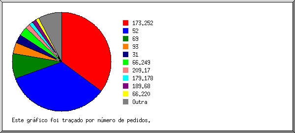
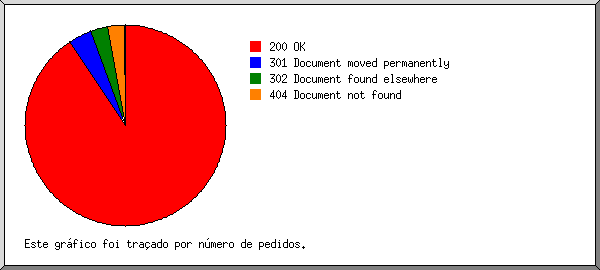
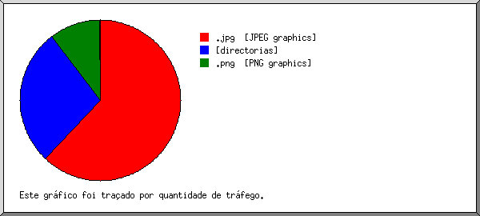
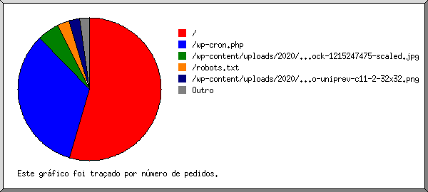

Estatísticas do Servidor Web de blog.uniprev.com.br
Estatísticas do Servidor Web de blog.uniprev.com.br
Começo do programa em Sab-30-Mai-2020 10:04.
Análise de pedidos desde Seg-13-Abr-2020 08:24 até Sex-29-Mai-2020 19:07 (46,45 dias).
Estatísticas do Servidor Web de blog.uniprev.com.brComeço do programa em Sab-30-Mai-2020 10:04.
Análise de pedidos desde Seg-13-Abr-2020 08:24 até Sex-29-Mai-2020 19:07 (46,45 dias).
(Ir a: Início | Sumário Geral | Relatório Mensal | Resumo Diário | Resumo Horário | Relatório de Domínios | Relatório de organizações | Relatório de referência redireccionada | Relatório do sítio de referência | Relatório de Leitores | Resumo de Leitores | Relatório de Sistemas Operativos | Relatório de Códigos de Estado | Relatório de Tamanho de Ficheiro | Relatório de Tipos de Ficheiro | Relatório de Directorias | Relatório de Pedidos)
Os valores entre parêntesis referem-se aos 7 dias até 30-Mai-2020 10:04.
Pedidos atendidos: 3 045 (35)
Número médio de pedidos atendidos por dia: 65 (4)
Pedidos de páginas atendidos: 1 729 (13)
Número médio de pedidos de páginas atendidos por dia: 37 (1)
Pedidos não atendidos: 72 (0)
Pedidos redirigidos: 209 (1)
Ficheiros diferentes solicitados: 77 (8)
Servidores diferentes atendidos: 98 (8)
Tráfego total: 50,25 megabytes (1,33 megabytes)
Tráfego médio transferido por dia: 1,08 megabytes (195,23 kilobytes)
(Ir a: Início | Sumário Geral | Relatório Mensal | Resumo Diário | Resumo Horário | Relatório de Domínios | Relatório de organizações | Relatório de referência redireccionada | Relatório do sítio de referência | Relatório de Leitores | Resumo de Leitores | Relatório de Sistemas Operativos | Relatório de Códigos de Estado | Relatório de Tamanho de Ficheiro | Relatório de Tipos de Ficheiro | Relatório de Directorias | Relatório de Pedidos)
Cada unidade ( ) representa 25 pedidos de páginas ou fracção.
) representa 25 pedidos de páginas ou fracção.
| mês | N.ped | Pgs. | |
|---|---|---|---|
| Abr 2020 | 1140 | 720 |    |
| Mai 2020 | 1905 | 1009 |  |
Mês mais movimentado: Mai 2020 (1 009 pedidos de páginas).
(Ir a: Início | Sumário Geral | Relatório Mensal | Resumo Diário | Resumo Horário | Relatório de Domínios | Relatório de organizações | Relatório de referência redireccionada | Relatório do sítio de referência | Relatório de Leitores | Resumo de Leitores | Relatório de Sistemas Operativos | Relatório de Códigos de Estado | Relatório de Tamanho de Ficheiro | Relatório de Tipos de Ficheiro | Relatório de Directorias | Relatório de Pedidos)
Cada unidade () representa 10 pedidos de páginas ou fracção.
| dia | N.ped | Pgs. | |
|---|---|---|---|
| Dom | 299 | 152 | |
| Seg | 417 | 159 | |
| Ter | 605 | 414 |  |
| Qua | 631 | 341 | |
| Qui | 453 | 277 | |
| Sex | 356 | 225 | |
| Sab | 284 | 161 | |
(Ir a: Início | Sumário Geral | Relatório Mensal | Resumo Diário | Resumo Horário | Relatório de Domínios | Relatório de organizações | Relatório de referência redireccionada | Relatório do sítio de referência | Relatório de Leitores | Resumo de Leitores | Relatório de Sistemas Operativos | Relatório de Códigos de Estado | Relatório de Tamanho de Ficheiro | Relatório de Tipos de Ficheiro | Relatório de Directorias | Relatório de Pedidos)
Cada unidade () representa 4 pedidos de páginas ou fracção.
| h | N.ped | Pgs. | |
|---|---|---|---|
| 00 | 86 | 43 | |
| 01 | 247 | 147 | |
| 02 | 40 | 20 | |
| 03 | 0 | 0 | |
| 04 | 72 | 37 | |
| 05 | 52 | 23 | |
| 06 | 82 | 22 | |
| 07 | 57 | 38 | |
| 08 | 60 | 60 | |
| 09 | 282 | 185 | |
| 10 | 72 | 36 | |
| 11 | 132 | 114 | |
| 12 | 166 | 100 | |
| 13 | 109 | 70 | |
| 14 | 248 | 111 | |
| 15 | 176 | 91 | |
| 16 | 43 | 33 | |
| 17 | 68 | 38 | |
| 18 | 247 | 99 | |
| 19 | 171 | 86 | |
| 20 | 92 | 42 | |
| 21 | 246 | 157 | |
| 22 | 81 | 52 | |
| 23 | 216 | 125 | |
(Ir a: Início | Sumário Geral | Relatório Mensal | Resumo Diário | Resumo Horário | Relatório de Domínios | Relatório de organizações | Relatório de referência redireccionada | Relatório do sítio de referência | Relatório de Leitores | Resumo de Leitores | Relatório de Sistemas Operativos | Relatório de Códigos de Estado | Relatório de Tamanho de Ficheiro | Relatório de Tipos de Ficheiro | Relatório de Directorias | Relatório de Pedidos)
Mostrando os domínios, ordenados por quantidade de tráfego.
| N.ped | %bytes | domínio |
|---|---|---|
| 3045 | 100% | [endereço numérico não traduzido] |
(Ir a: Início | Sumário Geral | Relatório Mensal | Resumo Diário | Resumo Horário | Relatório de Domínios | Relatório de organizações | Relatório de referência redireccionada | Relatório do sítio de referência | Relatório de Leitores | Resumo de Leitores | Relatório de Sistemas Operativos | Relatório de Códigos de Estado | Relatório de Tamanho de Ficheiro | Relatório de Tipos de Ficheiro | Relatório de Directorias | Relatório de Pedidos)

Mostrando as organizações, ordenadas por número de pedidos.
| N.ped | %bytes | organização |
|---|---|---|
| 1131 | 18,10% | 173.252 |
| 1046 | 0,04% | 52 |
| 276 | 6,90% | 69 |
| 152 | 12,76% | 93 |
| 95 | 1,51% | 31 |
| 72 | 0,01% | 66.249 |
| 36 | 6,69% | 179.178 |
| 30 | 10,77% | 189.68 |
| 27 | 0,06% | 181.215 |
| 26 | 2,18% | 163.172 |
| 25 | 0,44% | 66.220 |
| 25 | 13,43% | 177.66 |
| 24 | 6,48% | 201.77 |
| 24 | 2,28% | 209.17 |
| 20 | 5,40% | 187.18 |
| 16 | 4,32% | 177.134 |
| 12 | 6,45% | 177.59 |
| 8 | 2,16% | 170.79 |
(Ir a: Início | Sumário Geral | Relatório Mensal | Resumo Diário | Resumo Horário | Relatório de Domínios | Relatório de organizações | Relatório de referência redireccionada | Relatório do sítio de referência | Relatório de Leitores | Resumo de Leitores | Relatório de Sistemas Operativos | Relatório de Códigos de Estado | Relatório de Tamanho de Ficheiro | Relatório de Tipos de Ficheiro | Relatório de Directorias | Relatório de Pedidos)
Mostrando os URLs de referência, ordenados por número de pedidos redireccionados.
| N.ped | URL |
|---|---|
| 56 | https://blog.uniprev.com.br/wp-content/uploads/2020/04/iStock-1215247475-scaled.jpg |
(Ir a: Início | Sumário Geral | Relatório Mensal | Resumo Diário | Resumo Horário | Relatório de Domínios | Relatório de organizações | Relatório de referência redireccionada | Relatório do sítio de referência | Relatório de Leitores | Resumo de Leitores | Relatório de Sistemas Operativos | Relatório de Códigos de Estado | Relatório de Tamanho de Ficheiro | Relatório de Tipos de Ficheiro | Relatório de Directorias | Relatório de Pedidos)
Mostrando os sítios de referência, ordenados por número de pedidos.
| N.ped | sítio |
|---|---|
| 1102 | https://blog.uniprev.com.br/ |
| 95 | https://www.google.com/ |
| 12 | https://www.google.com.br/ |
(Ir a: Início | Sumário Geral | Relatório Mensal | Resumo Diário | Resumo Horário | Relatório de Domínios | Relatório de organizações | Relatório de referência redireccionada | Relatório do sítio de referência | Relatório de Leitores | Resumo de Leitores | Relatório de Sistemas Operativos | Relatório de Códigos de Estado | Relatório de Tamanho de Ficheiro | Relatório de Tipos de Ficheiro | Relatório de Directorias | Relatório de Pedidos)

Mostrando os leitores com pelo menos 1 pedido de uma página, ordenados por número de pedidos de páginas.
| N.ped | Pgs. | Leitor |
|---|---|---|
| 1425 | 1425 | facebookexternalhit/1.1 (+http://www.facebook.com/externalhit_uatext.php) |
| 76 | 76 | Mozilla/5.0 (Windows NT 6.1; Win64; x64) AppleWebKit/537.36 (KHTML, like Gecko) Chrome/64.0.3282.186 Safari/537.36 |
| 53 | 53 | Mozilla/5.0 (Macintosh; Intel Mac OS X 10.13; rv:58.0) Gecko/20100101 Firefox/58.0 |
| 50 | 50 | Mozilla/5.0 (Linux; Android 7.0; SM-G930V Build/NRD90M) AppleWebKit/537.36 (KHTML, like Gecko) Chrome/59.0.3071.125 Mobile Safari/537.36 |
| 27 | 27 | Mozilla/5.0 (Macintosh; Intel Mac OS X 10_12_6) AppleWebKit/537.36 (KHTML, like Gecko) Chrome/64.0.3282.186 Safari/537.36 |
| 26 | 26 | Mozilla/5.0 (X11; Ubuntu; Linux x86_64; rv:58.0) Gecko/20100101 Firefox/58.0 |
| 24 | 24 | Mozilla/5.0 (Windows NT 10.0; Win64; x64; rv:58.0) Gecko/20100101 Firefox/58.0 |
| 24 | 24 | Mozilla/5.0 (Macintosh; Intel Mac OS X 10_12_6) AppleWebKit/604.5.6 (KHTML, like Gecko) Version/11.0.3 Safari/604.5.6 |
| 24 | 24 | Mozilla/5.0 (compatible; Nimbostratus-Bot/v1.3.2; http://cloudsystemnetworks.com) |
| 1316 | 0 | [não listados: 6 Leitores] |
(Ir a: Início | Sumário Geral | Relatório Mensal | Resumo Diário | Resumo Horário | Relatório de Domínios | Relatório de organizações | Relatório de referência redireccionada | Relatório do sítio de referência | Relatório de Leitores | Resumo de Leitores | Relatório de Sistemas Operativos | Relatório de Códigos de Estado | Relatório de Tamanho de Ficheiro | Relatório de Tipos de Ficheiro | Relatório de Directorias | Relatório de Pedidos)

Mostrando os leitores com pelo menos 1 pedido de uma página, ordenados por número de pedidos de páginas.
| no. | N.ped | Pgs. | Leitor |
|---|---|---|---|
| 1 | 1425 | 1425 | facebookexternalhit |
| 1425 | 1425 | facebookexternalhit/1 | |
| 2 | 348 | 177 | Safari |
| 324 | 153 | Safari/537 | |
| 24 | 24 | Safari/604 | |
| 3 | 103 | 103 | Firefox |
| 103 | 103 | Firefox/58 | |
| 4 | 96 | 24 | Netscape (compatible) |
| 1073 | 0 | [não listados: 2 Leitores] |
(Ir a: Início | Sumário Geral | Relatório Mensal | Resumo Diário | Resumo Horário | Relatório de Domínios | Relatório de organizações | Relatório de referência redireccionada | Relatório do sítio de referência | Relatório de Leitores | Resumo de Leitores | Relatório de Sistemas Operativos | Relatório de Códigos de Estado | Relatório de Tamanho de Ficheiro | Relatório de Tipos de Ficheiro | Relatório de Directorias | Relatório de Pedidos)

Mostrando os Sistemas Operativos, ordenados por número de pedidos de páginas.
| no. | N.ped | Pgs. | Sistema Operativo |
|---|---|---|---|
| 1 | 2567 | 1449 | Sistema Operativo desconhecido |
| 2 | 104 | 104 | Macintosh |
| 3 | 298 | 100 | Windows |
| 103 | 76 | Windows desconhecido | |
| 195 | 24 | Windows NT | |
| 4 | 76 | 76 | Unix |
| 76 | 76 | Linux |
(Ir a: Início | Sumário Geral | Relatório Mensal | Resumo Diário | Resumo Horário | Relatório de Domínios | Relatório de organizações | Relatório de referência redireccionada | Relatório do sítio de referência | Relatório de Leitores | Resumo de Leitores | Relatório de Sistemas Operativos | Relatório de Códigos de Estado | Relatório de Tamanho de Ficheiro | Relatório de Tipos de Ficheiro | Relatório de Directorias | Relatório de Pedidos)

Mostrando os códigos de estado, por ordem numérica.
| N.ped | cod. estado |
|---|---|
| 3045 | 200 OK |
| 126 | 301 Document moved permanently |
| 83 | 302 Document found elsewhere |
| 72 | 404 Document not found |
(Ir a: Início | Sumário Geral | Relatório Mensal | Resumo Diário | Resumo Horário | Relatório de Domínios | Relatório de organizações | Relatório de referência redireccionada | Relatório do sítio de referência | Relatório de Leitores | Resumo de Leitores | Relatório de Sistemas Operativos | Relatório de Códigos de Estado | Relatório de Tamanho de Ficheiro | Relatório de Tipos de Ficheiro | Relatório de Directorias | Relatório de Pedidos)

| tamanho | N.ped | %bytes |
|---|---|---|
| 0 | 0 | |
| 1B- 10B | 0 | |
| 11B- 100B | 1118 | 0,05% |
| 101B- 1kB | 54 | 0,05% |
| 1kB- 10kB | 1520 | 23,32% |
| 10kB-100kB | 250 | 21,25% |
| 100kB- 1MB | 103 | 55,33% |
(Ir a: Início | Sumário Geral | Relatório Mensal | Resumo Diário | Resumo Horário | Relatório de Domínios | Relatório de organizações | Relatório de referência redireccionada | Relatório do sítio de referência | Relatório de Leitores | Resumo de Leitores | Relatório de Sistemas Operativos | Relatório de Códigos de Estado | Relatório de Tamanho de Ficheiro | Relatório de Tipos de Ficheiro | Relatório de Directorias | Relatório de Pedidos)

Mostrando as extensões com pelo menos 0,1% do tráfego, ordenadas por quantidade de tráfego.
| N.ped | %bytes | extensão |
|---|---|---|
| 115 | 55,54% | .jpg [JPEG graphics] |
| 1729 | 44,18% | [directorias] |
| 56 | 0,17% | .png [PNG graphics] |
| 1145 | 0,11% | [não listadas: 2 extensões] |
(Ir a: Início | Sumário Geral | Relatório Mensal | Resumo Diário | Resumo Horário | Relatório de Domínios | Relatório de organizações | Relatório de referência redireccionada | Relatório do sítio de referência | Relatório de Leitores | Resumo de Leitores | Relatório de Sistemas Operativos | Relatório de Códigos de Estado | Relatório de Tamanho de Ficheiro | Relatório de Tipos de Ficheiro | Relatório de Directorias | Relatório de Pedidos)

Mostrando as directorias com pelo menos 0,01% do tráfego, ordenadas por quantidade de tráfego.
| N.ped | %bytes | directoria |
|---|---|---|
| 171 | 55,71% | /wp-content/ |
| 2825 | 44,23% | [directoria da raiz] |
| 49 | 0,06% | /wp-admin/ |
(Ir a: Início | Sumário Geral | Relatório Mensal | Resumo Diário | Resumo Horário | Relatório de Domínios | Relatório de organizações | Relatório de referência redireccionada | Relatório do sítio de referência | Relatório de Leitores | Resumo de Leitores | Relatório de Sistemas Operativos | Relatório de Códigos de Estado | Relatório de Tamanho de Ficheiro | Relatório de Tipos de Ficheiro | Relatório de Directorias | Relatório de Pedidos)

Mostrando os ficheiros com pelo menos 20 pedidos, ordenados por número de pedidos.
| N.ped | %bytes | hora ant. | ficheiro |
|---|---|---|---|
| 1729 | 44,18% | 29/Mai/20 19:07 | / |
| 19 | 0,02% | 13/Abr/20 08:24 | /?173.252.87.29 |
| 1024 | 0,04% | 29/Mai/20 19:07 | /wp-cron.php |
| 26 | 13/Abr/20 21:40 | /wp-cron.php?doing_wp_cron=1586814047.1323471069335937500000 | |
| 26 | 14/Abr/20 01:24 | /wp-cron.php?doing_wp_cron=1586838284.0082828998565673828125 | |
| 26 | 14/Abr/20 01:24 | /wp-cron.php?doing_wp_cron=1586838284.0082709789276123046875 | |
| 25 | 26/Abr/20 18:40 | /wp-cron.php?doing_wp_cron=1587926421.6930570602416992187500 | |
| 23 | 29/Abr/20 01:39 | /wp-cron.php?doing_wp_cron=1588124393.5647749900817871093750 | |
| 23 | 29/Abr/20 04:00 | /wp-cron.php?doing_wp_cron=1588132800.8766639232635498046875 | |
| 23 | 29/Abr/20 09:08 | /wp-cron.php?doing_wp_cron=1588151318.0768959522247314453125 | |
| 22 | 29/Abr/20 22:21 | /wp-cron.php?doing_wp_cron=1588198917.9601581096649169921875 | |
| 22 | 29/Abr/20 12:33 | /wp-cron.php?doing_wp_cron=1588163609.0475530624389648437500 | |
| 22 | 30/Abr/20 06:02 | /wp-cron.php?doing_wp_cron=1588226545.7131600379943847656250 | |
| 22 | 29/Abr/20 15:31 | /wp-cron.php?doing_wp_cron=1588174316.0303559303283691406250 | |
| 22 | 29/Abr/20 18:45 | /wp-cron.php?doing_wp_cron=1588185900.9396889209747314453125 | |
| 22 | 30/Abr/20 00:30 | /wp-cron.php?doing_wp_cron=1588217445.9407699108123779296875 | |
| 21 | 30/Abr/20 14:41 | /wp-cron.php?doing_wp_cron=1588257681.5392339229583740234375 | |
| 21 | 30/Abr/20 18:40 | /wp-cron.php?doing_wp_cron=1588272058.3732678890228271484375 | |
| 21 | 1/Mai/20 00:01 | /wp-cron.php?doing_wp_cron=1588291301.0296521186828613281250 | |
| 21 | 1/Mai/20 09:45 | /wp-cron.php?doing_wp_cron=1588326315.5151560306549072265625 | |
| 20 | 2/Mai/20 05:12 | /wp-cron.php?doing_wp_cron=1588396331.4010848999023437500000 | |
| 20 | 2/Mai/20 02:11 | /wp-cron.php?doing_wp_cron=1588385469.0560410022735595703125 | |
| 20 | 1/Mai/20 23:20 | /wp-cron.php?doing_wp_cron=1588375226.4698960781097412109375 | |
| 20 | 2/Mai/20 09:20 | /wp-cron.php?doing_wp_cron=1588411255.9789490699768066406250 | |
| 20 | 1/Mai/20 14:41 | /wp-cron.php?doing_wp_cron=1588344064.2687499523162841796875 | |
| 20 | 1/Mai/20 20:30 | /wp-cron.php?doing_wp_cron=1588365034.4813768863677978515625 | |
| 19 | 2/Mai/20 15:23 | /wp-cron.php?doing_wp_cron=1588433020.1980259418487548828125 | |
| 19 | 2/Mai/20 23:16 | /wp-cron.php?doing_wp_cron=1588461391.2798540592193603515625 | |
| 19 | 3/Mai/20 10:42 | /wp-cron.php?doing_wp_cron=1588502525.0170700550079345703125 | |
| 19 | 3/Mai/20 07:58 | /wp-cron.php?doing_wp_cron=1588492690.7769770622253417968750 | |
| 19 | 2/Mai/20 19:26 | /wp-cron.php?doing_wp_cron=1588447591.1545960903167724609375 | |
| 18 | 4/Mai/20 11:32 | /wp-cron.php?doing_wp_cron=1588591923.2867109775543212890625 | |
| 18 | 3/Mai/20 23:15 | /wp-cron.php?doing_wp_cron=1588547707.2832419872283935546875 | |
| 18 | 3/Mai/20 14:03 | /wp-cron.php?doing_wp_cron=1588514616.6000709533691406250000 | |
| 18 | 3/Mai/20 14:03 | /wp-cron.php?doing_wp_cron=1588514616.6000928878784179687500 | |
| 18 | 4/Mai/20 09:25 | /wp-cron.php?doing_wp_cron=1588584344.2676529884338378906250 | |
| 17 | 6/Mai/20 01:53 | /wp-cron.php?doing_wp_cron=1588730028.8160750865936279296875 | |
| 17 | 5/Mai/20 19:53 | /wp-cron.php?doing_wp_cron=1588708412.9690539836883544921875 | |
| 17 | 5/Mai/20 10:45 | /wp-cron.php?doing_wp_cron=1588675553.7303779125213623046875 | |
| 17 | 4/Mai/20 14:21 | /wp-cron.php?doing_wp_cron=1588602113.2124829292297363281250 | |
| 17 | 4/Mai/20 23:00 | /wp-cron.php?doing_wp_cron=1588633222.5882658958435058593750 | |
| 16 | 6/Mai/20 14:46 | /wp-cron.php?doing_wp_cron=1588776391.0086700916290283203125 | |
| 16 | 6/Mai/20 21:47 | /wp-cron.php?doing_wp_cron=1588812459.4626860618591308593750 | |
| 16 | 7/Mai/20 06:31 | /wp-cron.php?doing_wp_cron=1588843868.3777430057525634765625 | |
| 16 | 6/Mai/20 21:47 | /wp-cron.php?doing_wp_cron=1588812459.4620609283447265625000 | |
| 15 | 7/Mai/20 21:35 | /wp-cron.php?doing_wp_cron=1588887334.5785679817199707031250 | |
| 15 | 8/Mai/20 09:43 | /wp-cron.php?doing_wp_cron=1588931012.2693669795989990234375 | |
| 13 | 11/Mai/20 14:03 | /wp-cron.php?doing_wp_cron=1589205835.1937499046325683593750 | |
| 12 | 12/Mai/20 04:18 | /wp-cron.php?doing_wp_cron=1589257105.2069509029388427734375 | |
| 12 | 12/Mai/20 19:38 | /wp-cron.php?doing_wp_cron=1589312289.3880729675292968750000 | |
| 11 | 13/Mai/20 20:44 | /wp-cron.php?doing_wp_cron=1589402694.0935170650482177734375 | |
| 11 | 13/Mai/20 17:48 | /wp-cron.php?doing_wp_cron=1589392091.9655869007110595703125 | |
| 10 | 18/Mai/20 18:40 | /wp-cron.php?doing_wp_cron=1589827243.3179280757904052734375 | |
| 10 | 18/Mai/20 13:36 | /wp-cron.php?doing_wp_cron=1589808962.7592151165008544921875 | |
| 103 | 55,33% | 25/Mai/20 12:32 | /wp-content/uploads/2020/04/iStock-1215247475-scaled.jpg |
| 72 | 0,01% | 22/Mai/20 17:51 | /robots.txt |
| 56 | 0,17% | 25/Mai/20 12:32 | /wp-content/uploads/2020/04/cropped-logo-uniprev-c11-2-32x32.png |
| 27 | 0,06% | 13/Abr/20 12:13 | /wp-admin/setup-config.php |
| 22 | 30/Abr/20 06:02 | /wp-admin/upgrade.php | |
| 22 | 30/Abr/20 06:02 | /wp-admin/upgrade.php?step=upgrade_db | |
| 12 | 0,21% | 12/Mai/20 15:25 | [não listados: 1 ficheiro] |
{kind=link}